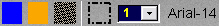

Cardúmenes
Los cardúmenes se definen como un polígono situado sobre la carta, este polígono delimita el espacio horizontal en el que se sitúa el cardumen. El volumen que ocupa, se determina construyendo un prisma a partir de este polígono, con la altura que se establezca. La posición del cardumen es siempre horizontal, no se consideran ángulos de inclinación del prisma.

La creación y edición de cardúmenes se realiza mediante la ventana Cardúmenes. Esta ventana tiene dos solapas, General y Datos. Al seleccionar cada una de ellas el contenido de la ventana varía, presentando los datos que se describen a continuación.
A continuación se describen los datos y botones que incluye esta ventana.
Nombre: Nombre del cardumen.
Formato: caracteres alfanuméricos.
Datos y botones de la solapa General:
Esta solapa contiene la lista de puntos que definen el polígono, y los datos relacionados con las aves asociadas al cardumen.
Botones de manejo de la lista de puntos que definen el polígono:
Editar: Este botón sirve para mostrar el gráfico del cardumen en la presentación cartográfica y para modificar los datos de los puntos del polígono.
Cuando se abre la ventana para crear un nuevo cardumen, la lista de puntos está vacía y el botón Editar está pulsado, en estas condiciones, al picar con el botón izquierdo del ratón sobre la presentación cartográfica, se añaden puntos a la lista a la vez que se van dibujando sobre la carta.
Cuando se abre la ventana para consultar los datos de un cardumen ya creado, al pulsar el botón Editar, el gráfico del cardumen aparece en la presentación cartográfica. Mientras el botón Editar esté pulsado, se pueden seleccionar los puntos picando sobre ellos con el botón izquierdo del ratón, y cambiarlos de posición arrastrando el ratón hasta la nueva posición.
Nota: Durante la edición de objetos gráficos (zonas meteorológicas, balizas, mapas de viento y corriente, rutas…) se anulan las funciones asignadas a los botones del ratón para control de la presentación cartográfica (posicionar hook, zoom+, zoom- demora/distancia…), por tanto para ver el gráfico del cardumen hay que hacer zoom sobre la zona de la carta en la que se encuentra dicha cardumen antes de pulsar el botón Editar.
Añadir: Al pulsar este botón se inserta un nuevo punto entre el punto seleccionado y el siguiente. También se pueden insertar puntos seleccionando con el ratón un segmento del gráfico y pulsando la tecla "Insertar".
Eliminar: Al pulsar este botón se elimina de la lista el punto seleccionado. También se pueden eliminar puntos seleccionando con el ratón un punto del gráfico del cardumen y pulsando la tecla "Suprimir".
Botones de recursos gráficos

Estos botones sirven para definir el color, el estilo y el tipo de letra que se aplica al gráfico de la zona meteorológica.
El funcionamiento de los botones de la barra de recursos gráficos se describe en el apartado Definición de Recursos Gráficos.
Datos de las aves:
Densidad de aves: Indica el porcentaje de aves asociadas al cardumen respecto al valor máximo (configurable). Puede tomar los siguientes valores:
- Sin aves (0%)
- Baja (25%)
- Moderada (50%)
- Alta (75%)
- Muy alta (100%)
Altura de las aves: Altura a la que se sitúan las aves.
Unidades: metros
Rango: 0.0- 100000.00
Datos y botones de la solapa Datos:
Alto: Altura del prisma que define el cardumen.
Unidades: metros
Rango: 0.0 - 500.0
Densidad: Número de peces por volumen de cardumen.
Unidades: peces/m3
Rango: 0.0 - 1000.0
Profundidad - Respecto al fondo: Si se marca esta casilla el dato Profundidad inicial se considera desde el fondo, si no se marca, se considera desde superficie.
Profundidad inicial: Profundidad inicial de la línea media del cardumen. Si se modifica esta profundidad durante la ejecución de un ejercicio, el cardumen se sitúa automáticamente en esta profundidad, salvo que el cardumen no quepa en cuyo caso se situará en la profundidad más próxima en la que quepa. Si el cardumen tiene velocidad vertical, continuará su desplazamiento vertical hacia la profundidad solicitada.
Unidades: metros
Rango: 0.0 - 500.0
Profundidad solicitada: Profundidad hacia la que se desplaza el cardumen y que sólo será alcanzada si se dan las condiciones necesarias (velocidad vertical y espacio para albergar el cardumen a esa profundidad). Esta profundidad se expresa siempre con respecto a la superficie.
Unidades: metros
Rango: 0.0 - 500.0
Rumbo: Rumbo inicial del movimiento del cardumen. Este rumbo se mantiene hasta que el cardumen encuentre un buque o tierra que le impida mantener el rumbo.
Unidades: grados
Rango: 0.0 - 360.0
Velocidad Horizontal: Velocidad inicial de desplazamiento del cardumen. Esta velocidad se modifica cuando aparece un buque cercano.
Unidades: nudos
Rango: 0.0 -100.0
Máxima Velocidad Vertical: Máxima velocidad para el movimiento vertical del cardumen.
Unidades: nudos
Rango: 0.0 -100.0
Margen de Movimiento Vertical: Este valor delimita la profundidad mínima y la máxima en la que se mueve el cardumen verticalmente.

Si el margen es 0 no hay movimiento vertical.
Unidades: metros
Rango: 0.0 -500.0
Los cardúmenes, una vez creados, se pueden añadir a los Escenarios, los cuales a su vez pueden ser incorporados en distintos Ejercicios.
Los cardúmenes se muestran gráficamente en la Presentación Cartográfica del instructor, tanto durante la preparación como durante la ejecución de ejercicios que incluyan cardúmenes.